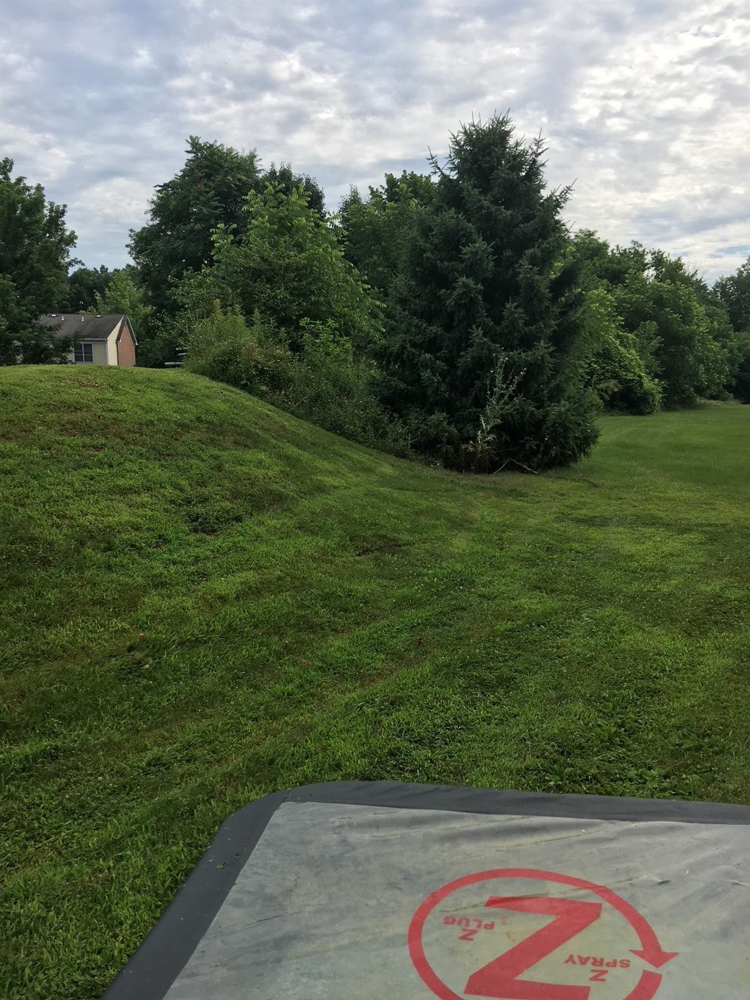

Why Camp Hill Yards Are Different
Camp Hill's borough lots aren't large — but they're loaded with mature oaks, maples, dense ornamentals, and decades-old foundation plantings. That mature canopy holds humidity all day, which is exactly what adult mosquitoes need to rest between feeding cycles. Properties on Walnut, Market, and Chestnut Streets back into shaded gardens that can be 5–10 degrees cooler than the open lawn — and they're the daytime mosquito hideout.
At the south end, the Yellow Breeches Creek defines the borough boundary and brings a different problem: cool, wet floodplain that breeds floodwater mosquitoes after every heavy rain, plus deer ticks moving in from the wooded creek buffer. Properties from Walden Way south get both pressures combined.


What We Do for Camp Hill Yards
Yard Barrier Treatments
Focused on the shaded resting zones under your mature trees — not blasted across the whole lawn. Surgical application that protects pollinator-attractive plants. Reapply every 3–4 weeks.
In2Care Stations
Especially effective on tight Camp Hill lots where you can't easily eliminate every standing-water source on a neighbor's property. The stations recruit visiting mosquitoes and send them back to their hidden breeding sites with larvicide on board.
EcoGuard Plus Organic
Fully organic, EPA-exempt barrier treatment with 30-day repellency. Built for Camp Hill families that want real chemical-free control around children, dogs, and vegetable beds.
Yellow Breeches Tick Perimeter
If you back onto the Yellow Breeches or the wooded buffer south of Walden Way, you have deer ticks crossing into your yard nightly. We treat the leaf litter, lawn-woodline edge, and any stone walls or wood piles where mice transit.
Breeding Site Audit
Tight lots collect water in unexpected places — neighbor's fence gutter dripping over, decorative birdbath, hose-end nozzle. We do a walk-through every visit because the breeding sites change with the season.
Event Treatments
Garden party, July 4th cookout, school graduation? Single application timed 24–48 hours before. Reserve early — Camp Hill summer Saturdays book out fast.
Camp Hill Neighborhoods We Treat
The borough's classic streets — Walnut, Market, Chestnut, 22nd Street, 24th Street. The Walden, Walden Way, and Tudor Hill neighborhoods. Properties along the Conodoguinet at the north end and along the Yellow Breeches at the south. Homes adjacent to Willow Park and Siebert Park. Anywhere in 17011.